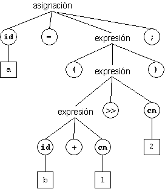
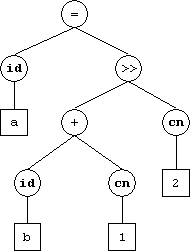

El Analisis Sintactico descubre la estructura sintáctica (normalmente jerárquica) de la cadena de entrada usando las reglas que definen las cadenas válidas en el Lenguaje fuente.
Dichas reglas viene expresadas en forma de una Gramatica que describe de manera relativamente breve las frases o secuencias válidas en un Lenguaje. Una gramática también describe la estructura jerárquica o sintáctica de las frases de un lenguaje.
Una gramática es un conjunto de reglas de la forma: a ? ß
Por ejemplo:
expre → expre + expre
Cada regla se llama una producción, y el operador "?" puede leerse como tiene la siguiente forma, o tiene la siguiente expansión.
Este es un ejemplo de una gramática para las expresiones aritméticas:
E → E + T | T
E → E - T | T
T → T * F | F
T → T / F | F
F → ( E ) | id | num
Árbol de Análisis Sintáctico (Parse Tree)
El arbol sintáctico es un árbol que refleja la estructura sintáctica de la entrada. Ese tipo de árbol se llama árbol de análisis sintáctico (también árbol de sintaxis concreta, o arbol de derivación).

Árbol Sintáctico (Abstracto)
Para facilitar la fase de análisis semántico, el analizador sintáctico puede transformar el árbol de sintaxis cocreta en un árbol de sintaxis abstracta o árbol sintáctico a secas, donde se elimina la información sintáctica que no es relevante para la compresión del significado lógico del programa:

{kind=link}
{kind=link}